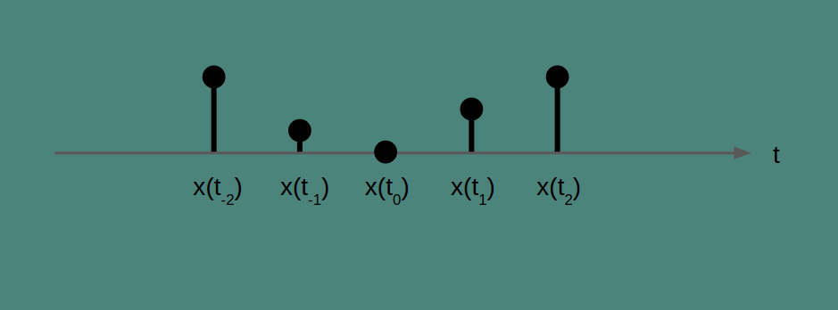
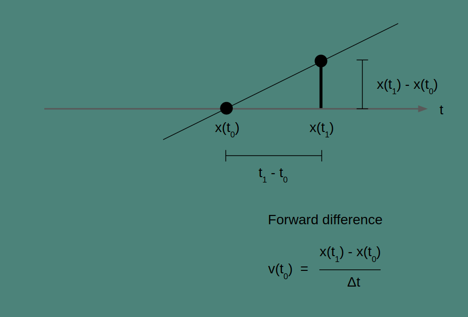
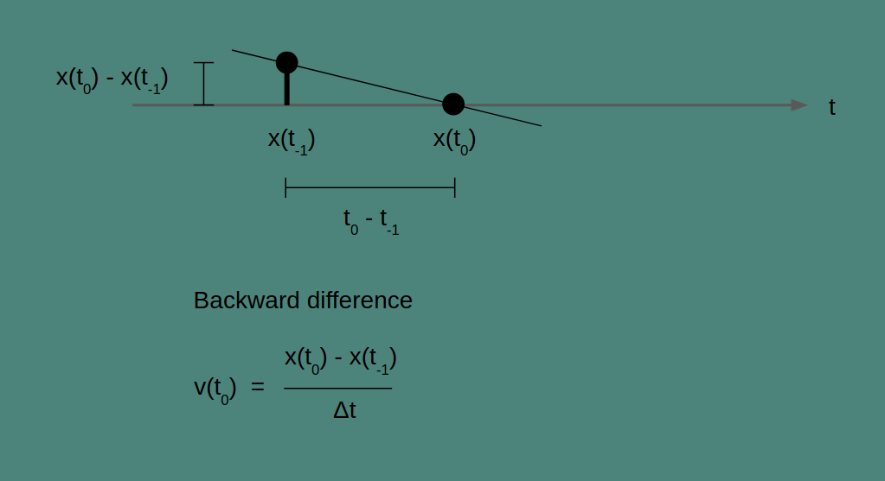
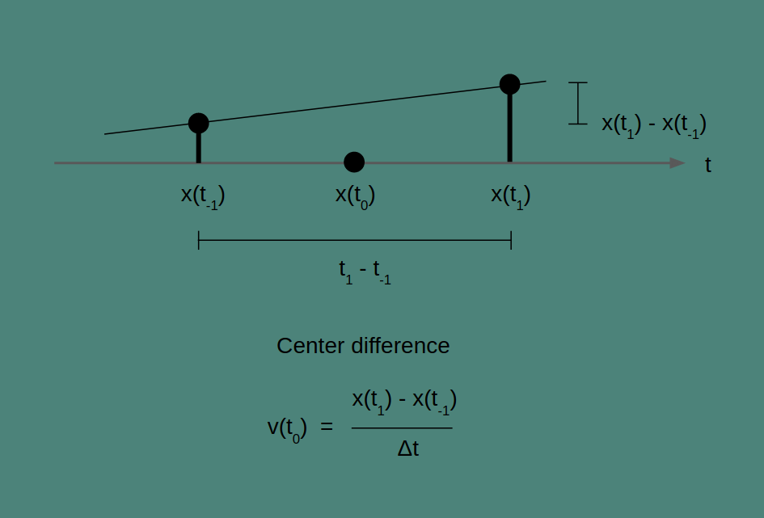
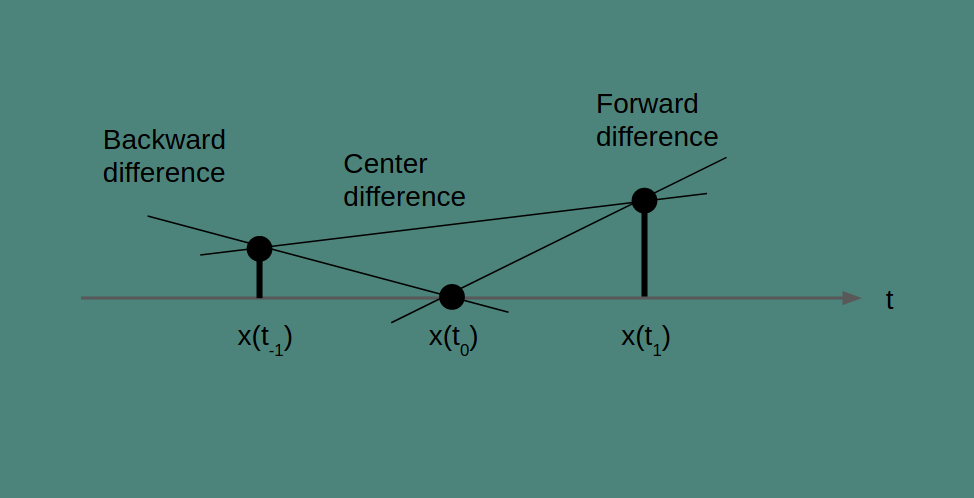

part of Course 137 Signal Processing Techniques
Sometimes we're not so interested in the thing our data measures, as we are in how it changes over time. Sea level is interesting how fast it is changing over hours and years is even more so. Population of a town is important, but how fast it is going up or down is a critical economic indicator. Customer purchases are informative in their own right, but whether customers are making those purchases less often is a strong signal for predicting whether they'll leave you.
You can also do this with data measured across different positions. Elevation data is useful, but how elevation changes as you walk tells you how steep the terrain is and is a very important factor to keep in mind as you plan your hike.
To calculate rate of change, you'll need a series of measurements made at regularly spaced intervals of time or distance. (There are methods for dealing with irregular intervals, but that will be the topic of another post.) For our example, we'll measure the temperature, x, at different times, t. We'll make those measurements at intervals of 1 hour.
Temperature data has lots of uses, but we are trying to choose what to wear outside today, so we're interested in answering the question of whether it's getting warmer or cooler right now. What's the rate of change of temperature at this moment?

There are a few different ways to get at this. We can't measure it directly. The notion of rate of change comes from calculus, and the only way you calculate it directly is to have measurements infinitessimally close together. Our measurements are an hour apart, so we're just going to have to do the best we can with that. We'll look at three methods: forward difference, backward difference, and center difference.
Forward difference

Backward difference

Center difference

When to use which
